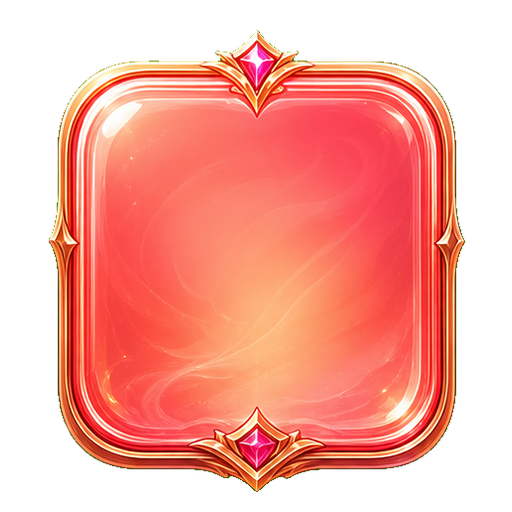
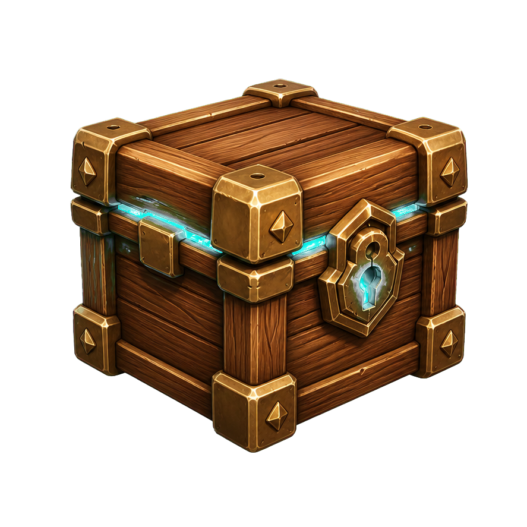
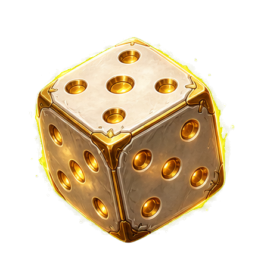
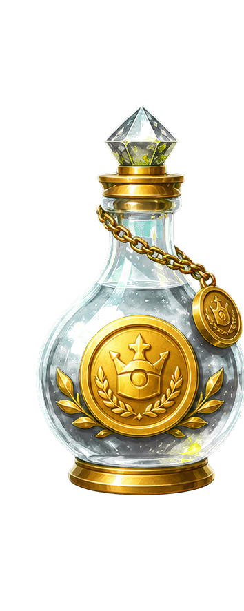

Open a new environment, new resource tiers, and new systems.
Miners automatically discover ores. Higher ores increase the amount of the ore beneath them, while Stone multiplies Money gain.
Multi is your base Money per second. Prestige multiplies Multi button rewards, Power multiplies Prestige rewards, Super Prestige multiplies Power rewards, Ascension multiplies Super Prestige rewards, and Infernal multiplies Ascension rewards.
Multi × Money bonuses × (sqrt(Stone) + 1). Relics are permanent, potions last five minutes, and Stone comes from Mining.
Buying Prestige or any higher tier resets every resource below the purchased tier. XP, levels, worlds, miners, ores, crates, relics, and potions remain.
Leveling awards Basic crates through level 99. Unlocking Worlds 2 and 3 awards Advanced crates. Modern crates contain permanent relics or temporary potions.
Mining unlocks in World 2. The timer runs at 60 ÷ miners seconds, capped at 120 effective miners. Ores progress from Stone through Diamond.

Your resources form a chain. A resource is spent on buttons that award the next resource, and owning a higher resource increases how much of the resource immediately below it those buttons award.
| Resource | What it does | What increases it |
|---|---|---|
| Money | Money is generated automatically. Your base income is your current Multi every second, before relic, potion, and Stone bonuses. Spend Money on Multi buttons. | Multi, Money relics, Money potions, and Stone. |
| Multi | Every point of Multi adds directly to your base Money per second. Spend Multi on Prestige buttons. | Each Multi button's listed gain is multiplied by Prestige + 1, then by Multi relic and potion bonuses. |
| Prestige | Prestige makes Multi buttons award more Multi. Spend Prestige on Power buttons. | Each Prestige button's listed gain is multiplied by Power + 1, then by Prestige relic and potion bonuses. |
| Power | Power makes Prestige buttons award more Prestige. Spend Power on Super Prestige buttons in World 2. | Each Power button's listed gain is multiplied by Super Prestige + 1, then by Power relic and potion bonuses. |
| Super Prestige | Super Prestige makes Power buttons award more Power. Spend it on Ascension buttons in World 2. | Each Super Prestige button's listed gain is multiplied by Ascension + 1, then by Super Prestige potion bonuses. |
| Ascension | Ascension makes Super Prestige buttons award more Super Prestige. Spend it on Infernal buttons in World 3. | Each Ascension button's listed gain is multiplied by Infernal + 1. |
| Infernal | Infernal makes Ascension buttons award more Ascension. It is currently the highest resource tier. | Infernal buttons award their listed amount; there is currently no higher resource multiplying their gain. |
Money income: each second you gain approximately Multi x Money bonuses x (sqrt(Stone) + 1). For example, 100 Multi with no other bonuses produces about $100 per second. A 2x Money potion raises that to $200 per second. If you also have 9 Stone, the Stone multiplier is 4x, raising it to $800 per second.
Example of the resource chain: if a Multi button normally gives +80 Multi and you own 4 Prestige, it gives 80 x (4 + 1) = 400 Multi before relics or potions. That new Multi then increases your Money income by 400 per second.
Multi purchases only spend Money and do not reset anything. Buying Prestige or a higher resource resets all lower resources, but you keep the resource you bought and every resource above it.
| Button purchased | Cost | Resources reset |
|---|---|---|
| Multi | Money | None |
| Prestige | Multi | Money returns to 0 and Multi returns to 1. |
| Power | Prestige | Money, Multi, and Prestige. |
| Super Prestige | Power | Money through Power. |
| Ascension | Super Prestige | Money through Super Prestige. |
| Infernal | Ascension | Money through Ascension. |
Relics, potions, ores, miners, XP, levels, crates, and unlocked worlds are not removed by these resource resets.
Unlock new worlds to access higher tier buttons and new features. Each world has three modern background scenes. A random scene for the active world is chosen whenever the page opens or you navigate into that world.
The header bar shows your progress toward the next level. Levels do not directly multiply your resource gains; they track your XP and award Basic crates. Higher-tier reset purchases give four times as much XP as the tier before them.
| Reset purchase | XP gained |
|---|---|
| Prestige | 1 XP |
| Power | 4 XP |
| Super Prestige | 16 XP |
| Ascension | 64 XP |
| Infernal | 256 XP |
Each eligible purchase grants XP once, regardless of which button in that tier you buy. The debug multiplier also multiplies XP when it is enabled. The total XP needed for level L is ceil(5 x (L - 1)5/3). For example, levels 2, 3, 4, 5, and 10 require 5, 16, 32, 51, and 195 total XP.

You receive one Basic crate for each level gained from level 2 through level 99. Advanced crates are awarded when you unlock World 2 and World 3. Open a crate from the Crates screen to receive one item.
In the modern UI, every crate contains either a Relic (62.5%) or a Potion (37.5%). Items within a category use weighted chances, so items near the start of each list are more common.
| Crate | Possible contents |
|---|---|
| Basic | Relics: Magic dice, Ruby crown, Tome of finances, Tome of multi Potions: Money, Multi, Prestige, Power |
| Advanced | Relics: Shiny screw, Golden key, Tome of prestige, Tome of power Potions: Prestige, Power, Super Prestige |

Relics are permanent and work automatically. Duplicate copies increase that relic's bonus. Relics affecting the same resource combine multiplicatively.
| Relic | Permanent effect per copy | Found in |
|---|---|---|
| Magic dice | +20% Money gain | Basic |
| Ruby crown | +30% Multi gain | Basic |
| Tome of finances | +75% Money gain | Basic |
| Tome of multi | +75% Multi gain | Basic |
| Shiny screw | +60% Multi gain | Advanced |
| Golden key | +100% Money gain | Advanced |
| Tome of prestige | +75% Prestige gain | Advanced |
| Tome of power | +75% Power gain | Advanced |

Potions are consumed when activated and double one type of gain for 5 minutes. The active potion icons and their countdown timers appear beside the resource list. Using another potion of the same type while it is active resets its timer to 5 minutes; it does not stack above 2x.
| Potion | Effect for 5 minutes | Found in |
|---|---|---|
| Money potion | 2x Money gain | Basic |
| Multi potion | 2x Multi gain | Basic |
| Prestige potion | 2x Prestige gain | Basic and Advanced |
| Power potion | 2x Power gain | Basic and Advanced |
| Super Prestige potion | 2x Super Prestige gain | Advanced |
Mining unlocks in World 2. The first miner costs $1.00e30. Each purchased miner makes the next one 100,000 times more expensive. As soon as you own a miner, it automatically completes mining rolls.
The Next ore timer counts down to the next roll. The time between rolls is 60 / miners seconds, capped at 120 miners. This means 1 miner rolls every 60 seconds, 10 miners every 6 seconds, 60 miners every second, and 120 or more miners every 0.5 seconds. The first roll after buying your first miner happens immediately because the initial timer is zero.
| Ore rolled | Chance per roll | Amount gained |
|---|---|---|
| Stone | 50% | Iron + 1 |
| Iron | 25% | Gold + 1 |
| Gold | 12.5% | Sapphire + 1 |
| Sapphire | 6.25% | Emerald + 1 |
| Emerald | 3.125% | Ruby + 1 |
| Ruby | 1.5625% | Diamond + 1 |
| Diamond | 1.5625% | 1 |
Higher ores increase how much of the ore immediately below them you receive. For example, each Stone roll gives your current Iron amount plus 1 Stone, while each Ruby roll gives your current Diamond amount plus 1 Ruby. Stone boosts passive Money gain by sqrt(Stone) + 1; 9 Stone gives a 4x Money multiplier and 100 Stone gives an 11x multiplier.